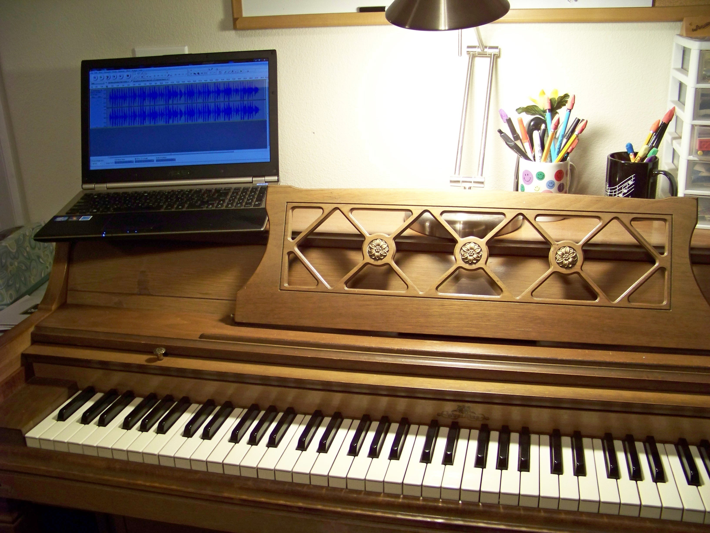
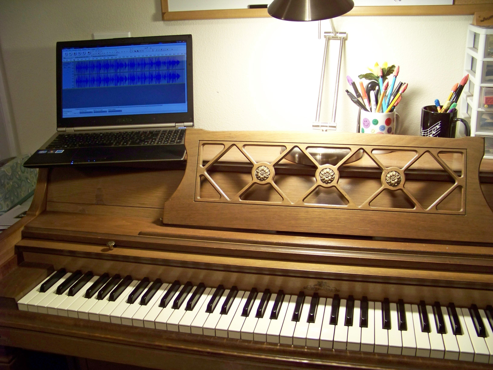

Studio Policy
- 1. Fees...
-
- a. The tuition for the 2023-2024 music teaching year will be from Sep 8, 2023 to May 11, 2023. 30-minute private lessons $75/month. This fee will be the same each month regardless of the number of lessons during the month.
- b. Summer lessons are available in June & July pay per 30-minute lesson.
- c. There will be a $15 registration fee due in August to reserve your spot for the fall and to cover set up fees and copies for the year. It is non-refundable.
- d. There will be a $15 Jr Music Club registration fee due in August for participation in events throughout the year.
- e. Payment will be due at the first scheduled lesson of that month.
- f. A late fee of $10 will be added if payment is not received at the 1st lesson of the month.
- g. It is understood that if you start lessons in August that you will complete the year (thru May 2023). If that cannot be done then you must give at least 1 month notice.
- h. There are 3 “sick” days built into the tuition this year. There will be no make-up lessons scheduled or credits given for any lessons missed by the student or the teacher. If the 3 sick days have been used up and I need to cancel a lesson for some reason I will credit that lesson back the following month.
- i. When you cannot attend your lesson you must contact me before your lesson time or it will be considered a “No-call No-show”. The first No-call No-show you will be given a warning. Any future No-call No-shows during the year may result in termination.
- j. There will be no refunds of monthly tuition for missed lessons by the student.
- k. You may "swap" a lesson time with another student as long as you let me know in advance
- l. You are still expected to call ahead if you are not going to be to your lesson.
- 2. Lesson Requirements...
-
- a. Bring all your books with you each time as well as your lesson binder
-
- i. 1st time you don’t bring all your books = warning
- ii. 2nd time in a month = possible termination
- b. Be prompt! Lessons are scheduled close together.
- 3. Books...
-
- a. New students will be billed for the method books that I choose for them.
- b. New music is needed from time to time for various reasons: student finished a method, festivals, additional practice, more repertoire, or other performances. I will purchase new piano books and include them on your monthly invoice.
- c. Notice will be given before the music is purchased.
- 4. Practicing...
-
- a. Student is required to practice 5 days per week
-
- i. Elementary level--20min/day
- ii. Late Elementary/Early Intermediate level--30 min/day
- iii. Intermediate level--45 min/day
- iv. Late intermediate/Advanced level--60 min/day
- b. Parent is required to sign practice record
- c. You must practice a minimum of 80% of your required practice time.
- d. The first month you do not maintain the 80% practice requirement you will be put on probation. You will have 1 month to bring your practice percent back up to 80%. If you cannot meet that requirement you will be terminated as a piano student.
- e. If you are on probation more than 2 times during the piano teaching year you will be terminated as a piano student.
- 5. Performance Opportunities...
-
- a. November 14, 2022—Accompaniment Festival (BPAC)
- b. January 2024—Monster Concert
- c. April 20, 2024—Solo Festival
- d. April 22, 2024—Honors Recital (BPAC)
- e. May 2024—Studio Recital
- 6. Contact Information
-
- a. Mailing address…. 1205 W Hoff Road, Blackfoot, Idaho 83221
- b. Email address… andreahansenpianostudio@gmail.com
- c. Website address… https://ahpianostudio.musicteachershelper.com/
- d. Cell phone (call or text)... (208) 250-9885
 
